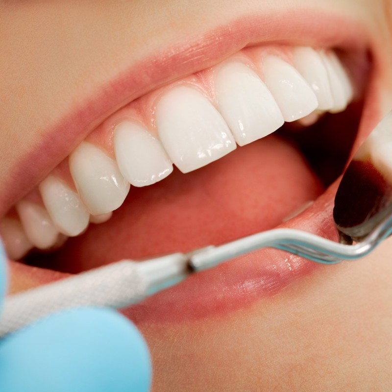
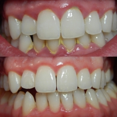
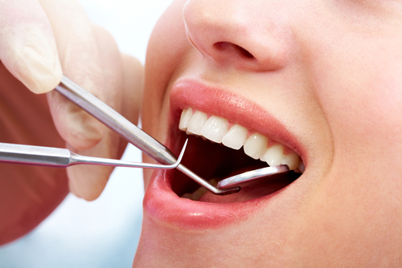
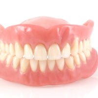
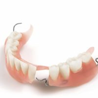
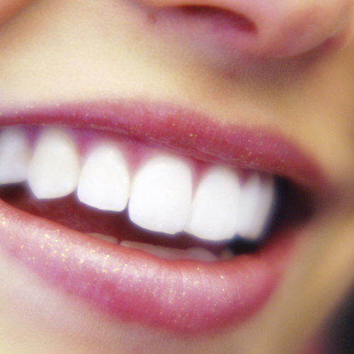

We provide general, restorative and cosmetic dentistry, and oral surgery.
General dentistry involves the prevention, diagnosis and treatment of a wide variety of conditions, disorders and diseases affecting the teeth, gums and maxillofacial (associated with the jaw and face) region of the body.
General dentists provide services related to the general maintenance of oral hygiene and tooth health.
Ideally, dentistry is preventative. We recommend that you visit your dentist regularly – at least once every 6-12 months – to ensure proper oral hygiene and functionality. Regular checkups and oral health maintenance prevent the development of serious dental problems that can require costly treatment. If you remain vigilant and visit your dentist regularly, you can enjoy exceptional dental health.
Gum disease (gingivitis) is chronic inflammation of the gum tissue (gingiva). Typically associated with poor oral hygiene, gingivitis is the early stage of periodontitis. Many people are not even be aware that they have gingivitis, because it is usually not painful. Periodontitis is an inflammatory condition affecting the tissues surrounding a tooth, and is the leading cause of tooth loss. There are a number of causes of gum disease, each of which can be corrected and controlled.
There are a number of treatments available for gum disease sufferers, each of which varies depending on the severity of the condition. In order to determine the treatment modality that best meets your needs, your dentist will evaluate the extent of the damage caused by gum disease to develop a conservative initial plan. A dental hygiene evaluation will determine if plaque (soft deposits on the tooth) is being removed on a daily basis.
Next, dental tartar (also known as calculus) must be removed through a professional cleaning, and sometimes through the additional procedures of deep scaling and root planing. A local anesthetic may be administered during these procedures. Your dentist may also administer antibiotics to treat bacteria housed in the pocketed areas of the gum, and recommend a medicated mouthwash to be used as a regular part of your home regimen.
Restorative dentistry is the process of restoring the function of the tooth by replacing missing or damaged tooth structure. Restorations are classified as either:
The restoration is fabricated, or made inside the mouth, ie. composite or amalgam fillings.
The restoration is made outside of the mouth, ie. dentures, crowns, bridges, implants, inlays, onlays. Common materials used are acrylic, chrome, gold, porcelain, and zirconia.
A denture is a removable replacement for missing teeth and surrounding tissues. Two types of denture are available; complete and partial dentures. Complete dentures are used when all the teeth are missing while partial dentures are used when some natural teeth remain.
Full dentures can be either "conventional" or "immediate." A conventional denture is made after teeth have been removed and the gum area has healed or where teeth have already been missing for some time. The design and manufacture process can take 4-8 weeks before the denutre is ready for placement in the mouth. Unlike conventional dentures, immediate dentures are made in advance and can be positioned as soon as the teeth are removed. As a result, the wearer does not have to be without teeth during the healing period. However, bones and gums shrink over time, especially during the healing period following tooth removal. Therefore a disadvantage of immediate dentures compared with conventional dentures is that they require more adjustments to fit properly during the healing process and generally should only be considered a temporary solution until conventional dentures can be made.
A removable partial denture consists of replacement teeth attached to a pink or gum-colored plastic base, which is sometimes connected by metal framework that holds the denture in place in the mouth. Partial dentures are used when one or more natural teeth remain in the upper or lower jaw. A partial denture can be immediate or conventional also.
Whether a dental crown is needed for tooth cracks, excessive tooth decay, damaged tooth protection, teeth grinding, missing teeth, need for beautification or an improper bite resulting from the natural wear and tear produced by aging, dental crowns of today can satisfy your functional and aesthetic needs. The purpose of a dental crown is to encompass and protect a needy tooth with a custom-designed tooth material, much like a fitted cap.
Dental bridges are used to replace missing teeth that would otherwise adversely affect your mouth. The negative effects of one or more missing teeth can include the shifting of other teeth to accommodate for the open space, a change in the bite that may affect your ability to eat, and an increased risk for periodontal disease and tooth decay. A fixed bridge replaces one or more teeth by placing crowns on the teeth on either side of the space and attaching artificial teeth to them. This bridge is then cemented into place. Not only does a dental bridge fill in the spaces created by missing teeth, it prevents other teeth from changing position.
While traditional dentistry focuses on oral hygiene and preventing, diagnosing and treating oral disease, cosmetic dentistry focuses on improving the appearance of a person's teeth, mouth and smile. In other words general dentistry addresses dental problems that require necessary treatment, whereas cosmetic dentistry provides elective – or desired – treatments or services.
Today, dental fillings may fall into the category of cosmetic dentistry, because you can select fillings made of porcelain or composite materials that closely match the colour of your teeth, thus maintaining the natural appearance of your teeth and smile.
Chipped, broken, discoloured or decayed teeth may be repaired or have their appearance corrected using a filling procedure called composite bonding. A dental composite filling material with the look of enamel and dentin is applied into the cavity or onto the surface of a tooth, where it is then sculpted into shape, contoured and hardened with a high-intensity light. The result is a restoration that blends with the remainder of the surrounding tooth structure and the rest of your natural teeth to create a healthy, bright smile.
Teeth whitening is perhaps the most commonly recommended cosmetic dentistry procedure. Teeth are often stained from smoking, food, drink (coffee, tea or red wine) or poor oral hygiene. Bleaching the teeth can enhance the appearance of your smile. We provide home whitening kits which include trays made to fit your mouth precisely and whitening gel.
Composite or laminate veneers are adhesively bonded to the surface of a tooth to correct and repair chips and cracks will improve a worn appearance or severe tooth discolouration.
Tooth extraction is the removal of a tooth from its socket in the bone. Although permanent teeth were meant to last a lifetime, there are a number of reasons why having a tooth pulled in adulthood is sometimes necessary. A very common reason involves a tooth that is too badly damaged, from trauma or decay, to be repaired. Other reasons include overcrowding, orthodontics, infection and gum disease.
There are two types of extractions, simple and complex. In a simple extraction, the tooth is loosened with an instrument called an elevator. Then, a forceps is used to remove the tooth. A surgical extraction is a more complex procedure. It is used if a tooth may have broken off at the gum line or has not come into the mouth yet. A small incision must be made into your gum and some of the bone around the tooth removed or the tooth cut in half in order to extract it. Sometimes it is necessary for surgical extractions to be performed by specialist oral surgeons.
For more complicated dental procedures such as orthodontics, root canal treatment and implants we have a number of respected and trusted specialists and experts to whom we refer.